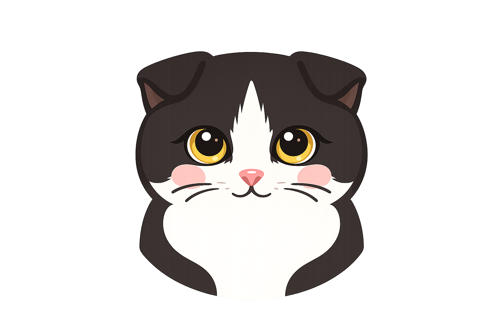

症状を見つける
気になる症状の「見ておきたいポイント」を確認します。
診断ではなく、不安を整理するための場所です。
にゃんとなく不安な夜に。
病院に行く？様子を見る？迷ったときの、猫の保健室。

ねこモヤ相談所は、猫と暮らす飼い主の目線で、猫ちゃんの健康や暮らしに関する一般的な情報を分かりやすくお伝えするサイトです。
獣医師による監修や診断を行うものではありません。
「病院へ行くべきかな?」
「少し様子を見てもいいのかな?」
そんな不安を整理するお手伝いをする場所です。
猫ちゃんの様子は一匹ずつ異なります。
心配な症状がある場合や、いつもと様子が違うと感じたときは、
無理に自己判断せず、早めに動物病院へご相談ください。
次のような症状がある場合は、様子を見ず、できるだけ早く動物病院へ連絡してください。
気になる症状の「見ておきたいポイント」を確認します。
断定せず、相談の優先度をやさしく整理します。
病院でそのまま見せられる形に整えます。
症状から探す
「いつもと違うかも？」と思ったところから選んでね。
呼吸が苦しそう、意識がおかしい、けいれん、尿が出ないなど緊急性が疑われる場合は、 症状を探し続けるより動物病院への連絡・相談を検討してください。
「吐いたのか咳なのかわからない」「なんとなくいつもと違う」と感じるときは、言葉にしながら整理してみましょう。
症状から探す
猫は毛玉などで吐くこともありますが、吐き方・回数・一緒に現れている症状などによって注意が必要な場合があります。
呼吸が明らかに苦しそう／意識・反応がおかしい／けいれん／倒れている／強く痛がっている／激しく、または繰り返し吐き続けている／ 吐こうとしているのに何も出ない状態が続く／お腹が明らかに張っている、強く痛がる／多量の出血／異物・薬・毒物などを口にした可能性がある場合は、 動物病院への連絡・相談を検討してください。
猫は毛づくろいで飲み込んだ毛などを吐くことがあります。
一方で、吐く理由はひとつではありません。
「毛玉かな？」「食べすぎかな？」と決めつけず、
吐いた回数や吐いたもの、その後の食欲・元気・水の飲み方なども
一緒に見ておきましょう。
次のような変化がある場合は、緊急チェックに当てはまらなくても、
動物病院へ相談することを検討してください。
迷ったときは、回数や吐いたものだけで判断せず、
猫ちゃん全体の様子も含めて動物病院へ相談してください。
このサービスは診断を行うものではありません。分かる範囲で、今の状況を一緒に整理します。
症状から探す
猫の食欲の変化には、さまざまな背景があります。
食べないだけでなく、「食べる量が減った」
「食べたそうなのに食べられない」など、
どんな変化があるかを観察することも大切です。
ねこモヤでは原因を判断するのではなく、
今の様子を一緒に整理していきます。
呼吸が明らかに苦しそう／意識・反応がおかしい／けいれん／倒れている／強く痛がっている／ 異物・薬・毒物などを口にした可能性がある場合は、動物病院への連絡・相談を検討してください。
猫は食べない状態が続くこと自体が体への負担になることがあります。 食べない・食べる量が大きく減った状態が続いている場合は、 様子だけで判断せず動物病院へ相談してください。
猫が食べない理由はひとつではありません。
体調の変化だけでなく、口の痛み、吐き気、ストレス、
環境やフードの変化などが関係することもあります。
また、「食べること自体に興味がない」のか、
「食べたそうにするけれど食べられない」のかも、
様子を整理するポイントになります。
食べない状態が続いている、食べる量が大きく減っている、
元気がない、吐く・下痢などほかの変化もある、
食べたそうなのに食べられないなどの場合は、
動物病院への相談を検討しましょう。
猫は、食べない状態が続くこと自体が体への負担に
なることがあります。
「もう少し様子を見ても大丈夫」とねこモヤだけで判断せず、
気になる状態が続く場合は獣医師へ相談してください。
このサービスは診断を行うものではありません。分かる範囲で、今の状況を一緒に整理します。
症状から探す
うんちは、食事や体調などによって変わることがあります。
やわらかさ・色・回数・出しにくそうな様子など、
いつもとの違いを一緒に見てみましょう。
大量の血が混じる／黒くタール状に見える便／ぐったりしている／強く痛がっている／ お腹が明らかに張っている／激しい下痢と嘔吐が続いている／ 異物・薬・毒物などを口にした可能性がある場合は、 動物病院への連絡・相談を検討してください。
うんちの状態は、食事の変化など身近な理由で変わることもあります。
一方で、下痢や便秘が続いたり、
ほかの体調変化が一緒に見られたりすることもあります。
「やわらかいから○○」
「出ないから○○」
と決めつけず、
いつから・どんな便か・猫ちゃん全体の様子を
一緒に見ておきましょう。
次のような変化がある場合は、緊急サインに当てはまらなくても
動物病院への相談を検討してください。
迷ったときは、便だけで判断せず、
猫ちゃん全体の様子も含めて動物病院へ相談してください。
このサービスは診断を行うものではありません。分かる範囲で、今の状況を一緒に整理します。
症状から探す
おしっこの回数や量、色、トイレでの様子は、
体調の変化に気づく手がかりになります。
「何度も行く」
「少ししか出ない」
「血のようなものが混じる」など、
いつもとの違いを一緒に整理してみましょう。
何度もトイレに行くのに尿が出ていない／いきんでいるのに数滴しか出ない／ 排尿時に鳴く、強く痛がる／ぐったりしている／吐いている／ お腹が張っている、触ると強く嫌がる／意識や反応がおかしい場合は、 通常のチェックを続けるより先に動物病院への連絡を検討してください。
男の子は体のつくりから、女の子よりも尿道が詰まりやすいと されています。
何度もトイレに行くのにおしっこが出ていない、 または数滴しか出ないような場合は、 様子を見続けず動物病院へ連絡してください。
※女の子にも尿路のトラブルは起こります。おしっこの異変には、回数が増える、量が減る、
血のようなものが混じる、トイレ以外でしてしまうなど、
いろいろな現れ方があります。
見た目だけで原因を決めつけず、
「いつから」
「どのくらい出ているか」
「排尿するときの様子」
などを一緒に見ておきましょう。
次のような変化がある場合は、緊急サインに当てはまらなくても
動物病院への相談を検討してください。
このサービスは診断を行うものではありません。分かる範囲で、今の状況を一緒に整理します。
症状から探す
「最近よく水を飲んでいる気がする」
「いつもより飲んでいないかも」
水の飲み方は、食事や気温などでも変わります。
いつから・どんなふうに変わったか、
ほかに気になる様子がないかを一緒に整理してみましょう。
水の飲み方の変化と一緒に、
など、明らかな体調の異変がある場合は、 チェックを続けるより先に 動物病院への連絡・相談を検討してください。
猫が水を飲む量は、食べているフードの種類や気温、
活動量などによっても変わります。
ウェットフードから水分を多くとっている猫は、
水皿から飲む量が少なく見えることもあります。
大切なのは、一般的な量と比べるだけではなく、
その子の普段の飲み方から変化していないかを見ることです。
次のような変化がある場合は、
動物病院への相談を検討してください。
1匹飼いなどで無理なく確認できる場合は、
水を入れた量と残った量を記録しておくと、
変化を伝える参考になります。
多頭飼いなどで正確に分からない場合は、
無理に測らなくても大丈夫です。
「いつもよりよく飲んでいる気がする」など、
気づいた変化だけでも記録しておきましょう。
このサービスは診断を行うものではありません。分かる範囲で、今の状況を一緒に整理します。
症状から探す
「今日はなんとなく元気がない」
「いつもより寝ている」
「隠れて出てこない」
猫の体調の変化は、はっきりした症状ではなく
「いつもと違う様子」から気づくこともあります。
気になった変化を一緒に整理してみましょう。
呼吸が明らかに苦しそう／意識や反応がおかしい／けいれんしている／ 倒れている／立てない／強く痛がっている／繰り返し吐いている／ 異物、薬、毒物などを口にした可能性がある場合は、 通常の状況整理を続けるより先に動物病院への連絡を検討してください。
猫の様子の変化には、
遊ばなくなる、
動く時間が減る、
隠れる、
寝ている時間が増える、
鳴き方が変わる、
人との関わり方が変わるなど、
いろいろな現れ方があります。
ひとつの行動だけで原因を決めつけず、
「普段のその子と比べてどう違うか」を見てみましょう。
次のような変化がある場合は、
動物病院への相談を検討してください。
歩き方や鳴き方、普段と違う行動などは、
可能であれば動画を残しておくと、
動物病院で様子を伝える参考になることがあります。
このサービスは診断を行うものではありません。分かる範囲で、今の状況を一緒に整理します。
症状から探す
「呼吸がいつもと違う気がする」
「咳みたいな動きをする」
「くしゃみが増えた」
呼吸まわりの変化には、
急いで確認したいものと、
様子を整理して病院へ伝えたいものがあります。
まずは今、苦しそうな呼吸をしていないか
確認してみましょう。
口を開けて呼吸している／明らかに息が苦しそう／ 胸やお腹を大きく動かして呼吸している／首を伸ばすようにして呼吸している／ 呼吸が非常に速く見える状態が続いている／舌や歯ぐきが青紫、灰色っぽく見える／ ぐったりしている、倒れている場合は、 通常の状況整理を続けず、動物病院への連絡を優先してください。
猫の呼吸まわりの変化には、
くしゃみ、
咳、
鼻水、
呼吸音の変化など、
いろいろな現れ方があります。
また、猫の咳は毛玉などを吐こうとしている動きと
見分けにくいことがあります。
「咳なのか吐こうとしているのか分からない」という場合も、
無理に判断しなくて大丈夫です。
いつから・どんな様子なのか、
呼吸が苦しそうではないかを整理してみましょう。
次のような変化がある場合は、
動物病院への相談を検討してください。
咳なのか吐こうとしているのか分からない場合や、
呼吸音、呼吸の様子が気になる場合は、
無理のない範囲で動画を残しておくと、
動物病院で様子を伝える参考になることがあります。
くしゃみのあと、
壁や床などに鼻水が飛んでいたら、
色や状態も観察の参考になります。
無理に鼻を触って確認しなくても大丈夫です。
このサービスは診断を行うものではありません。分かる範囲で、今の状況を一緒に整理します。
症状から探す
「目やにが増えた」
「片目を細めている」
「目が白っぽく見える」
猫の目の変化には、
見た目で気づくものだけでなく、
歩き方や物への反応などから気づくものもあります。
いつから・どちらの目か・どんな変化なのかを
一緒に整理してみましょう。
目に強いケガをした、ぶつけた／眼球が明らかに飛び出している／ 目から出血している／急に目が大きく腫れた、飛び出して見える／ 突然、見えていないように見える／強く痛がっている、目をほとんど開けられない場合は、 通常の状況整理を続けず、動物病院への連絡を優先してください。
猫の目の異変は、
目やに、
涙、
赤み、
腫れ、
目を細める、
目を閉じる、
白っぽく見える、
濁って見えるなど、
見た目の変化として気づくことがあります。
また、
物にぶつかる、
段差をためらう、
ジャンプをためらうなど、
行動の変化から
「見え方がいつもと違うかも」と気づく場合もあります。
ひとつの変化だけで原因を決めつけず、
普段との違いを整理してみましょう。
次のような変化がある場合は、
動物病院への相談を検討してください。
目の赤み、濁り、目やになどが気になる場合は、
無理のない範囲で写真を残しておくと、
動物病院で経過を伝える参考になることがあります。
このサービスは診断を行うものではありません。分かる範囲で、今の状況を一緒に整理します。
症状から探す
「耳垢がいつもより多い気がする」
「耳をよく掻いている」
「頭を振ることが増えた」
猫の耳垢には、量や色、湿り気などに個体差があります。
大切なのは、耳垢があるかどうかだけではなく、
いつもの耳と比べて変化しているかを見ることです。
いつから・どちらの耳か・どんな変化なのかを
一緒に整理してみましょう。
次のような様子がある場合は、
ねこモヤでの状況整理を続けるよりも、
動物病院へ連絡して今の様子を伝えてください。
猫の耳垢は、量・色・湿り気などに個体差があります。
もともと耳垢が多い子や、
濃い色の耳垢がたまりやすい子もいます。
大切なのは、
「耳垢があるかどうか」
だけではなく、
「いつもの状態と比べて変化しているか」
を見ることです。
耳垢が急に増えた、
においが変わった、
赤みやかゆがる様子が出てきたなど、
普段との違いを整理してみましょう。
🐾 折れ耳の子も、
無理に耳を広げたり奥まで触ったりせず、
見える範囲で普段との違いを観察してみてください。
次のような変化がある場合は、
動物病院への相談を検討してください。
耳垢の色や量、耳の赤みなどが気になる場合は、
無理のない範囲で写真を残しておくと、
動物病院で経過を伝える参考になることがあります。
耳垢が気になっても、
耳の奥まで無理に掃除する必要はありません。
いつもより増えた、
におう、
赤い、
かゆそうなどの変化があるときは、
まずは今の様子を記録してみてください。
このサービスは診断を行うものではありません。分かる範囲で、今の状況を一緒に整理します。
症状から探す
「口臭が気になる」
「歯ぐきが赤い気がする」
「食べ物を口から落とすようになった」
猫の口や歯の変化は、
見た目だけでなく、
食べ方やよだれ、
口を気にする様子などから気づくことがあります。
「食べたくない」のか、
「食べたいけどうまく食べられない」のかも、
大切な観察ポイントです。
いつから・どんな変化があるのか、
一緒に整理してみましょう。
次のような様子がある場合は、
ねこモヤでの状況整理を続けるよりも、
動物病院へ連絡して今の様子を伝えてください。
🐾 口から糸やひものようなものが見えても、
無理に引っ張らず、動物病院へ連絡してください。
猫の口や歯の変化は、
口臭、
よだれ、
歯ぐきの赤みなど、
見た目やにおいだけで気づくとは限りません。
「食べ物を口から落とす」
「食べるのが遅くなった」
「食べたそうなのに途中でやめる」
「硬いものを避ける」
など、
食べ方の変化として気づくこともあります。
大切なのは原因を決めつけず、
普段の食べ方との違いを整理することです。
🐾 口の中を確認するときは、
嫌がる猫の口を無理に開けなくて大丈夫です。
見える範囲や、
食べ方・よだれ・口元を気にする様子なども
大切な観察情報になります。
次のような変化がある場合は、
動物病院への相談を検討してください。
食べ方がいつもと違う場合は、
無理のない範囲で食事中の様子を動画に残しておくと、
動物病院で経過を伝える参考になることがあります。
口の中を確認するときは、
嫌がる猫の口を無理に開けなくて大丈夫です。
見える範囲や、
食べ方・よだれ・口元を気にする様子なども
大切な観察情報になります。
このサービスは診断を行うものではありません。分かる範囲で、今の状況を一緒に整理します。
状況確認中
いくつか質問するね。分からないものは「分からない」で大丈夫です。
分からない場合は、無理に判断せず近くの動物病院へ相談してください。
この内容だけで病気や受診の必要性を診断するものではありません。 症状が続く・悪化する・普段と明らかに違う、または飼い主さんが不安を感じる場合は、動物病院へ相談してください。
病院メモ機能は準備中です。次回実装予定です。
受診目安チェック
当てはまるものを選ぶと、相談の目安を3段階で表示します。
迷うときは、無理に判断しようとせず動物病院に相談してください。
うちの子プロフィール
入力内容はこの画面の中だけで扱うプロトタイプです。
AI相談チャット風
返答は一般的な整理用です。緊急時は動物病院へ相談してください。
暮らしのお悩み
今日からできる対策と、注意したいポイントをまとめました。
病院に行く前メモ
いつから、何が、どのくらい起きているかを整理できます。
入力すると、ここにメモ形式でまとまります。